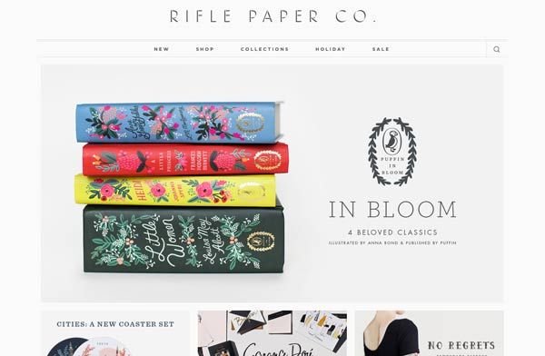

Rifle Paper Co.
The Rifle Paper Co. has an overall clean and cohesive design with a great use of negative space. They utilize a grid layout to organize their information into a clear hierarchy. Their navigation is easy to find and utilize.
The Rifle Paper Co. has an overall clean and cohesive design with a great use of negative space. They utilize a grid layout to organize their information into a clear hierarchy. Their navigation is easy to find and utilize.
Zara's site really achieves their main purpose which is to showcase their merchandise. This is a site that is really dependent upon great photography of the items and the design really allows them to be showcased. With a simple grid layout and a black and white design, they really highlight their products well. The navigation is easy to follow and utilize.
It is often difficult to organize a large retail site into a clean and easy to follow navigation. This is usually because there are many different categories and brands, etc. I think that REI really has organized their information well for a clean and easy to navigate site. The simple white background and strategically used photographs really allow the large amount of information to breathe.